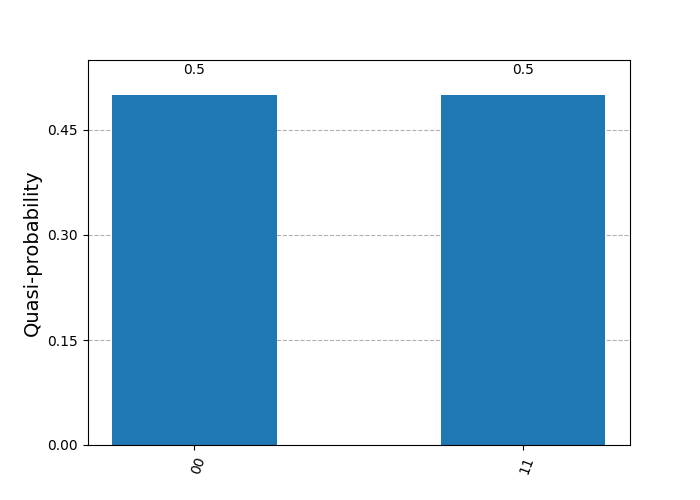
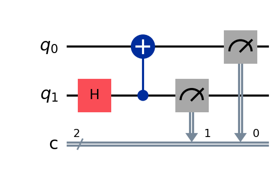
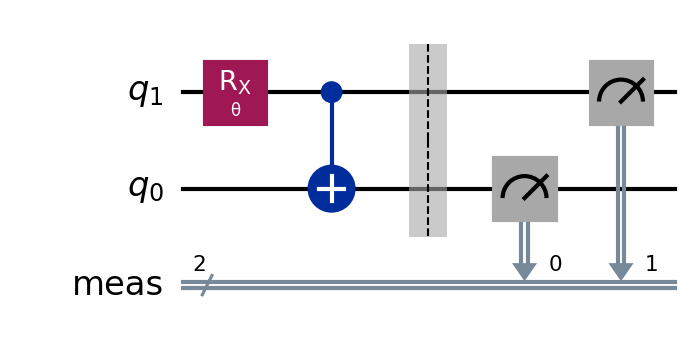
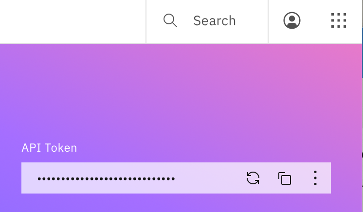
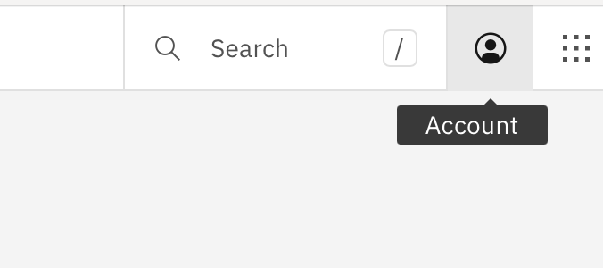
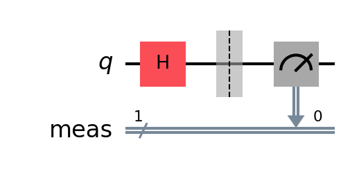
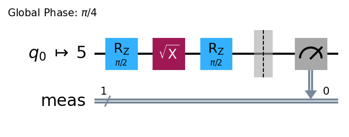
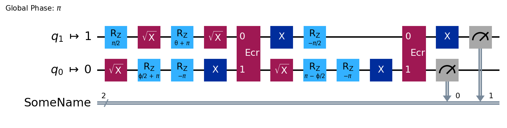
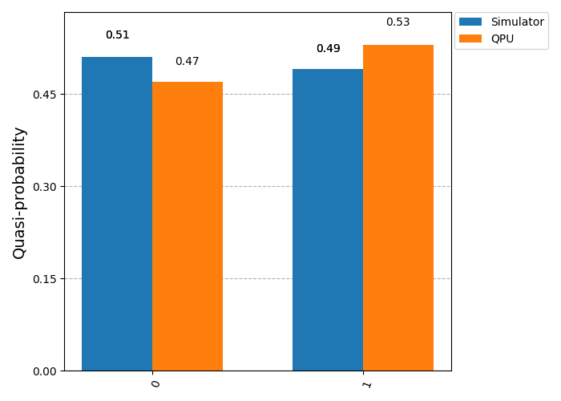
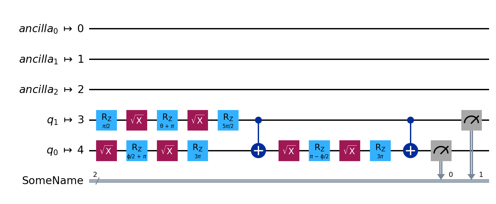

Qiskit + IBM: Simulation and Calculation
Table of Contents
- 1. Overview
- 2. The
quantum_infoModule - 3. The
BasicSimulatorClass - 4. The
qiskit_aer.AerSimulatorClass - 5. Qiskit Primitives
- 6.
qiskit_aerPrimitives - 7. Qiskit IBM Runtime Primitives
1. Overview
[Go back to Table of Contents]
- This page focuses on quantum computing simulations or job submissions on IBM
hardware
- There are several ways to simulate quantum computations
- Statevector simulations
- Using SamplerV2 or EstimatorV2
- There are several ways to simulate quantum computations
The general work-flow is to:
- Create a quantum circuit
- Decide whether to simulate it or run it on quantum hardware
- Typically, we simulate it first
- We want our simulation syntax to match as closely as possible to the syntax of job submission.
2. The quantum_info Module
[Go back to Table of Contents]
2.1. Overview
- The
quantum_infomodule is built intoqiskitand provides some basic simulations- This is useful when we want to understand the quantum properties of the output of a circuit
- It provides:
Statevectorsimulations
2.2. Make a Quantum Circuit
In a Jupyter notebook we could make a cell like this:
from qiskit import QuantumCircuit import qiskit.quantum_info as qi qc = QuantumCircuit(2) qc.x(0) # add a NOT gate to qubit 0 qc.h([0,1]) # add a H to both qubits # In a Jupyter notebook, you can uncomment "qc.draw()" # to see your circuit # qc.draw() from datetime import datetime print(f'Calculation complete at {datetime.now()}')
In Jupyter Lab, your result may be displayed automatically and look like Figure 1.
Figure 1: A simple qiskit quantum circuit.
2.3. Get an Output Statevector() Object
We can then obtain the circuit output in Statevector form:
ψ = qi.Statevector( qc ) print( ψ ) # In a Jupyter Lab notebook, you can see the result using this: # ψ.draw()
Statevector([ 0.5+0.j, -0.5+0.j, 0.5+0.j, -0.5+0.j],
dims=(2, 2))
In a Jupyter notebook, you can comment print( ψ ) and uncomment ψ.draw()
to see a result that's nicer than the one shown here. It may look like this:
2.4. Measurement Probabilities
Once we have a Statevector object, we can use it to see the probabilities of
measurement, which are the modulii squared of the coefficients:
print( ψ.probabilities() )
[0.25 0.25 0.25 0.25]
In this case, there are four outcomes, each with a 1/4 probability of occurring.
2.5. Simulated Experiments
Generally, a quantum computing experiment requires establishing a circuit and performing measurements many times. Each repetition is a shot or a trial, and a collection of shots is an ensemble of measurements.
2.5.1. Measurement Outcomes for Each Shot
We can use ψ to simulate circuit measurements using the sample_memory()
method. We specify a number of shots (trials), and we get a histogram of
samples, that is, the number of times each outcome was measured.
samples = ψ.sample_memory( shots = 10 ) # This lists the outcomes measured for each of the 10 shots print(samples) print(f'\nCalculation complete at {datetime.now()}')
['01' '01' '11' '01' '00' '00' '11' '01' '01' '00'] Calculation complete at 2025-02-26 13:41:02.891472
2.5.2. Cumulative Results over an Ensemble
- If we don't care about each shot, but rather, we care more about aggregate
data, we can use
sample_counts()- For a given number of shots, it simulates the set of measurements, returning a frequency (number of occurrences) for each outcome measured.
counts = ψ.sample_counts( shots = 1024 ) print(counts) print(f'\nCalculation complete at {datetime.now()}')
{np.str_('00'): np.int64(247), np.str_('01'): np.int64(253), np.str_('10'): np.int64(261), np.str_('11'): np.int64(263)}
Calculation complete at 2025-02-26 13:41:11.727536
The counts can be visualized in a histogram. In a Jupyter notebook, use the
following, but uncomment the plot_histogram() command:
from qiskit.visualization import plot_histogram # Uncomment in Jupyter to see histogram # plot_histogram( counts )
#+RESULTS
[[./img/basic_hist.png]] Calculation complete at 2025-02-26 13:41:38.404511

Figure 2: This is a histogram of simulated measurents based on a Statevector output from a quantum circuit.
State vector simulations get us a state vector, and we are using that state vector object to simulate measurements.
2.5.3. Expectation Values
State vector simulations also allow us to get expectation values, as defined in Equation \eqref{orga2c2986}
\begin{equation} \label{orga2c2986} \left\langle \mathbf{O} \right\rangle = \left\langle \psi \left| \mathbf{O} \right| \psi \right\rangle \end{equation}First, we form an operator:
O = qi.SparsePauliOp(['ZZ', 'XX', 'II'], [0.2, -0.3, 0.4]) # Uncomment this in Jupyter # display(O.to_operator()) # Comment/omit this in Jupyter print(O.to_operator())
Operator([[ 0.6+0.j, 0. +0.j, 0. +0.j, -0.3+0.j],
[ 0. +0.j, 0.2+0.j, -0.3+0.j, 0. +0.j],
[ 0. +0.j, -0.3+0.j, 0.2+0.j, 0. +0.j],
[-0.3+0.j, 0. +0.j, 0. +0.j, 0.6+0.j]],
input_dims=(2, 2), output_dims=(2, 2))
Next, we supply \(\mathbf{O}\) to the ψ (a Statevector object) in its
expectation_value() method:
O_exp = ψ.expectation_value( O ) print(O_exp)
(0.6999999999999997+0j)
2.5.4. Bloch Vectors
We can ask Python to draw the Bloch vector for ψ:
# Use this in Jupyter: # ψ.draw('bloch') # Comment this out or omit the following in Jupyter p fname = os.join('html', 'img', 'basicBlochVect.png') ψ.draw('bloch', filename=fname) import matplotlib.pyplot as plt plt.savefig( fname ) print(f'[[./{fname[5:]}]]')
ls *.png

Figure 3: Bloch vectors for the two qubits in ψ.
2.5.5. Density Matrices
Similar to a Statevector, we can also get a DensityMarix from a
circuit. Recall that a density matrix \(\rho\) may be obtained from a state
vector:
- Matrix Output
ρ = qi.DensityMatrix( qc ) print(ρ) # In Jupyter Lab, you may use #display( ρ )
DensityMatrix([[ 0.25+0.j, -0.25+0.j, 0.25+0.j, -0.25+0.j], [-0.25+0.j, 0.25+0.j, -0.25+0.j, 0.25+0.j], [ 0.25+0.j, -0.25+0.j, 0.25+0.j, -0.25+0.j], [-0.25+0.j, 0.25+0.j, -0.25+0.j, 0.25+0.j]], dims=(2, 2))In Jupyter, you may see output like this from the
\begin{equation} \begin{bmatrix} \frac{1}{4} & - \frac{1}{4} & \frac{1}{4} & - \frac{1}{4} \\ - \frac{1}{4} & \frac{1}{4} & - \frac{1}{4} & \frac{1}{4} \\ \frac{1}{4} & - \frac{1}{4} & \frac{1}{4} & - \frac{1}{4} \\ - \frac{1}{4} & \frac{1}{4} & - \frac{1}{4} & \frac{1}{4} \\ \end{bmatrix} \end{equation}display()command: - The City Plot
In Jupyter, we can plot the elements of the density matrix:

- Partial Trace
Given a multi-qubit density matrix, we can get a reduced density matrix for any subset of qubits.
ρ1 = qi.partial_trace( ρ, [0] ) print(ρ1)
DensityMatrix([[0.5+0.j, 0.5+0.j], [0.5+0.j, 0.5+0.j]], dims=(2,))
2.6. Conclusion
- The
quantum_infomodule is useful for:- very basic simulations
- exploring the quantum output of a circuit
- The
quantum_infomodule does not handle circuit simulations that:- are too large
- involve any measurement gates
3. The BasicSimulator Class
[Go back to Table of Contents]
- We need the
BasicSimulatorclass to perform simulations for circuits that include measurement gates
3.1. Build a Circuit
- Following Diego Serrano's tutorial, I build a circuit which includes
measurement gates
Start by importing required code
from qiskit import QuantumCircuit from qiskit.providers.basic_provider import BasicSimulator simulator_basic = BasicSimulator()
- The main things we've accomplished in this code are:
- We have imported the
BasicSimulatorclass - We have created
simulator_basicas aBasicSimulatorobject.
- We have imported the
- The main things we've accomplished in this code are:
Build the circuit with two quantum bits and two classical bits
qc = QuantumCircuit(2,2) # two qubits, and two classical bits qc.h(1) # apply a H gate to qubit 1 qc.measure(1, 1) # measure qubit 1, record its bit to classical bit 1 qc.x(0).c_if(1,1) # apply a X gate to qubit 0 if classical bit 1 is 1 qc.measure(0, 0) # measure qubit 0, record its result to classical bit 0 qc.draw(reverse_bits=True)
/var/folders/88/d26ncvp97zg50164_cmmlyf511m8tn/T/babel-bmQJhU/python-AGP0D6:5: DeprecationWarning: The method ``qiskit.circuit.instructionset.InstructionSet.c_if()`` is deprecated as of qiskit 1.3.0. It will be removed in 2.0.0. qc.x(0).c_if(1,1) # apply a X gate to qubit 0 if classical bit 1 is 1
Figure 4: This circuit has two qubits and two classical bits. The classical bits are required for measuremnt.
In a Jupyter notebook, the output of qc.draw() will resemble Figure
4.
3.2. Simulating the Circuit
To run the circuit, we use the BasicSimulator.run() method, and we supply the desired circuit, and we can specify the number of shots for our simulation:
# The .run() method performs the simulation, and and the run is # saved as job job = simulator_basic.run( qc, shots=1024 ) print(type(job))
<class 'qiskit.providers.basic_provider.basic_provider_job.BasicProviderJob'>
- This
run()method returns aBasicProviderJobobject- This has a
result()method that returns aResult()object contains our simulation results
- This has a
- This
3.3. Getting the Results
We save the results as
results:results = job.result() print(type(results)) print(results)
<class 'qiskit.result.result.Result'> Result(backend_name='basic_simulator', backend_version='0.1', qobj_id='5fa46fbe-251b-4733-b29c-6cd05bb52024', job_id='5abb07aa-3a06-4ff7-94e5-a27a9e678d07', success=True, results=[ExperimentResult(shots=1024, success=True, meas_level=2, data=ExperimentResultData(counts={'0x0': 519, '0x3': 505}), header=QobjExperimentHeader(qubit_labels=[['q', 0], ['q', 1]], n_qubits=2, qreg_sizes=[['q', 2]], clbit_labels=[['c', 0], ['c', 1]], memory_slots=2, creg_sizes=[['c', 2]], name='circuit-160', global_phase=0.0, metadata={}), status=DONE, name='circuit-160', seed_simulator=np.int32(1719395928), time_taken=0.07600593566894531)], date=None, status=COMPLETED, header=QobjHeader(backend_name='basic_simulator', backend_version='0.1'), time_taken=0.0760350227355957)- The results object has lots of information about our quantum experiment simulation
3.3.1. Simulation Counts
A
get_counts()method helps us retrieve the outcomes and their frequencies.counts = results.get_counts() print(counts)
{'00': 519, '11': 505}
3.3.2. Visualizing the Results
- We can plot the measurement results in two ways:
- as a histogram (counts) using
plot_histogram(), or - as a probability distribution using
plot_distribution().
- as a histogram (counts) using
from qiskit.visualization import plot_histogram, plot_distribution display( plot_distribution( counts ) ) display( plot_histogram( counts ) )

Figure 5: A histogram from the results of a BasicSimulator.run() simulation.

Figure 6: A quasi-probability distribution from the results of a BasicSimulator.run() simulation. Quasiprobabilities are not actual probabilities, but rather estimates of probabilites obtained by dividing the number of occurrences of an event by the total number of experiments (shots).
3.3.3. Inspecting Results from Individual Measurements
- We can see the results of individual measurements if we use the
get_memory()method for aResultsobject- This requires using the
memorykeyword with a value ofTruein therun()method for our basic simulator
- This requires using the
- Here, we do this with a fewer number of shots so that we can avoid overwhelming ourselves with numerous results
small_job = simulator_basic.run( qc, shots=8, memory=True) small_result = small_job.result() samples = small_result.get_memory() print(samples)
['00', '00', '00', '00', '11', '11', '11', '00']
3.4. Handling Complex Circuits
- The basic simulator cannot handle more complex circuits readily, such as the QFT circuit
- To handle complex circuits, we must first transpile our circuit.
from qiskit.circuit.library import QFT qc = QuantumCircuit(3, 3) # 3 qubits, 3 classical bits qc.append( QFT(3), range(3) ) qc.measure( range(3), range(3) ) qc.draw()
Figure 7: This is a more complex circuit including a QFT. BasicSimulator cannot handle this unless we first transpile it.
3.4.1. Transpilation
- Circuits may be composed of gates of various types
- Some gates may not exist natively on a particular quantum processing unit
(QPU), but may be implemented using the available gates on the QPU
- The set of available gates is often called the instruction set architecture (ISA)
- To transpile a circuit is to represent it in the ISA of a particular machine
- In this case, we transpile the QFT into gates available within the
BasicSimulatorclass.
from qiskit import transpile qc_trans = transpile( qc, backend=simulator_basic) qc_trans.draw()
Jupyter output for Listing will resemble Figure 8
Figure 8: This is a transpiled version of the circuit from Figure 7
3.5. Conclusion
- The
BasicSimulator()class is useful when we simulate a job where we need to find counts or samples of a circuit with mid-circuit measurements - The
BasicSimulator()class should not be used for:- large circuits with many qubits or many gates
- circuits where a coherent state is desired (state vector or density matrix)
- noisy simulations
4. The qiskit_aer.AerSimulator Class
[Go back to Table of Contents]
4.1. Overview
- The Qiskit Aer AerSimulator class can be used to simulate complex circuits with mid-circuit measurements
- We can obtain unitary results from these simulations.
- Qiskit Aer supports both noise-free and noisy simulations
- The Qiskit
AerSimulatorclass has arun()method that is simple and straightforward to use; however, its syntax is notably different from the tools used to launch calculations on actual quantum hardware (quantum processing units). - The
qiskit_ibm_runtimepackage provides interfaces called primitives to run jobs on QPUs. These primitives include:SamplerV2for obtaining counts for an ensemble of measurements on a circuitEstimatorV2for obtaining expectation values from the output of a circuit
- To simulate circuits in a way as closely as possible to the
qiskit_ibm_runtimeprimitives,qiskit_aeralso providesSamplerV2andEstimatorV2primitives- The
qiskit_aerprimitives are designed for similarity with theqiskit_ibm_runtimeprimitives
- The
- In summary:
qiskit_aer.AerSimulatorhas arun()method for simulating quantum circuits- This is notably different from primitives used to run jobs on quantum hardware
qiskit_aer.primitiveshasSamplerV2andEstimatorV2classes, which may be used to simulate circuits in a way very similar to the primitives used for running jobs on QPUs usingqiskit_ibm_runtime
4.2. Imports
- We begin by importing the required packages
- This introduces the
qiskit_aerpackage and theAerSimulatorclass
- This introduces the
from qiskit import QuantumCircuit #, transpile # from qiskit.quantum_info import Statevector # from qiskit.providers.basic_provider import BasicSimulator # from qiskit_aer import AerSimulator # simulator_basic = BasicSimulator() # simulator_aer = AerSimulator() print('test')
test
4.3. Build a Circuit
We define a circuit in Listing 1
import qiskit qc = QuantumCircuit(2,2) # two qubits, and two classical bits qc.h(1) # apply a H gate to qubit 1 qc.measure(1, 0) # measure qubit 1, record its bit to classical bit 0 qc.h(0).c_if(0,1) # apply a X gate to qubit 0 if classical bit 1 is 1 qc.save_statevector() qc.draw(reverse_bits=True) print(qiskit.__version__)
1.3.1
Figure 9: This is a two-qubit circuit with a measurement in the middle of the circuit.
- Here, the
save_statevector()method defines a point in the circuit at which we wish to knkow the state vector
4.4. Run the AerSimulator()
We first transpile the circuit so it is suitable for our simulator, and then we run it:
\begin{equation} \frac{\sqrt{2}}{2} |10\rangle+\frac{\sqrt{2}}{2} |11\rangle \end{equation}qc_aer = transpile(qc, backend=simulator_aer) result = simulator_aer.run(qc_aer).result() ψ = result.get_statevector() ψ # show the state vector in Jupyter Lab
4.5. Example 2: Circuit with Statevector in Middle of Circuit
Now, we provide an example where the state vector is saved from a point prior to the end of the circuit.
qc = QuantumCircuit(4) qc.h(3) qc.cx(3,2) qc.save_statevector() qc.cx(3,1) qc.cx(3,0) qc.measure_all() qc.draw(reverse_bits=True)
Figure 10: This circuit saves a
Statevectorin the middle of the calculation and just prior to measurement.
4.5.1. Transpile and Run the Circuit
Next, we transpile and run the circuit:
\begin{equation} \frac{\sqrt{2}}{2} |0000\rangle+\frac{\sqrt{2}}{2} |1100\rangle \end{equation}qc_aer = transpile(qc, backend=simulator_aer) result = simulator_aer.run(qc_aer).result() ψ = result.get_statevector() ψ
4.6. Efficient Simulation
- Portions of the
AerSimulatorcode are compiled toC- This allows faster and more efficient simulations, which enables simulations of larger and more complex circuits.
4.6.1. Build a Circuit
n = 24 qc = QuantumCircuit(n) qc.h(n-1) for i in range(n-1, 0, -1): qc.cx(i,i-1) qc.measure_all() if n < 16: display(qc.draw(reverse_bits=True)) else: print('Suppressed display of large circuit.')
Suppressed display of large circuit.
4.6.2. Run and Time the Circuit: BasicSimulator vs AerSimulator
- BasicSimulator
- In the following code, I simulate and time the circuit
- In Jupyter Lab, the time to run a cell can be obtained by adding
%%timeat the top of the cell. - These notes are not written in Jupyter Lab, so I use the
timemodule- Key instructions:
import timeto access the module- Use
time.time()to get the current time - The difference between two
timeobjects can be used to calculate a time interval in seconds
- Key instructions:
# In Jupyter Lab, uncomment the '%%time' # %%time # timing for non-Jupyter-Lab work import time start = time.time() # log start time - not required for Jupyter result = simulator_basic.run( qc, shots=1024 ).result() end = time.time() # log end time - not required for Jupyter time_basic_sim = end - start # not needed in Jupyter counts = result.get_counts() print(counts) # print() not needed if using %%time in Jupyter Lab print('Time elapsed: {0:6.3f} s'.format( time_basic_sim ))
{'000000000000000000000000': 531, '111111111111111111111111': 493} Time elapsed: 17.700 s AerSimulator
- We now run and time the same circuit using the
AerSimulator, and we see it is much faster for larger circuits
# In Jupyter Lab, uncomment the '%%time' # %%time # timing for non-Jupyter-Lab work start = time.time() # log start time - not required for Jupyter result = simulator_aer.run( qc, shots=1024 ).result() end = time.time() # log end time - not required for Jupyter time_aer_sim = end - start # not needed in Jupyter counts = result.get_counts() print(counts) # print() not needed if using %%time in Jupyter Lab print('Time elapsed: {0:6.3f} s'.format( time_aer_sim ))
{'111111111111111111111111': 537, '000000000000000000000000': 487} Time elapsed: 0.025 s- We now run and time the same circuit using the
4.7. Simulation Methods
- Qiskit Aer supports different types of simulation, accessible through the
methodkeyword argument to therun()command.- The default is
method'statevector'=- The limit here is 24 qubits
- Other methods include
'matrix_product_state'
- The default is
4.7.1. Build a Large Circuit
n = 50 qc = QuantumCircuit(n) qc.h(n-1) for i in range(n-1, 0, -1): qc.cx(i,i-1) qc.measure_all() if n < 16: display(qc.draw(reverse_bits=True)) else: print('Suppressed display of large circuit.')
Suppressed display of large circuit.
4.7.2. Run and Time the Simulation
# In Jupyter Lab, uncomment the '%%time' # %%time # timing for non-Jupyter-Lab work start = time.time() # log start time - not required for Jupyter result = simulator_aer.run( qc, shots=1024, method='matrix_product_state' ).result() end = time.time() # log end time - not required for Jupyter time_aer_sim = end - start # not needed in Jupyter counts = result.get_counts() print(counts) # print() not needed if using %%time in Jupyter Lab print('Time elapsed: {0:6.3f} s'.format( time_aer_sim ))
{'11111111111111111111111111111111111111111111111111': 492, '00000000000000000000000000000000000000000000000000': 532}
Time elapsed: 0.081 s
4.8. Noisy Simulation
4.8.1. Build a Circuit
qc = QuantumCircuit(2,2)
qc.h(1)
qc.cx(1,0)
qc.measure([1,0],[1,0])
qc.draw()

Figure 11: This is a small circuit for noisy simulation using the AerSimulator.
4.8.2. Ideal Result
# This will throw an error for n > 25 using method='statevector' qc_aer = transpile( qc, backend=simulator_aer ) result_ideal = simulator_aer.run( qc_aer, shots=1024 ).result() counts_ideal = result_ideal.get_counts() print(counts_ideal)
{'11': 520, '00': 504}
4.8.3. Noisy Result
from qiskit_aer import noise prob = 0.1 error = noise.depolarizing_error( prob, 2 ) noise_model = noise.NoiseModel() noise_model.add_all_qubit_quantum_error( error, ['cx']) basis_gates = noise_model.basis_gates result_noisy = simulator_aer.run(qc, shots=1024, noise_model=noise_model, basis_gates=basis_gates).result() counts_noisy = result_noisy.get_counts()
4.8.4. Compare Ideal Result and Noisy Result
from qiskit.visualization import plot_histogram, plot_distribution # In Jupyter Lab, uncomment this to see the compared distributions # plot_distribution( [counts_ideal, counts_noisy], title='Noiseless vs. Noisy Simulated Counts' )

Figure 12: An ideal AerSimulator result is compared to a noisy result.
4.9. Summary
The AerSimulator() is useful when we want to:
- Find counts/samples of large circuits (simulators are efficient)
- Find state vector/density matrix of circuits with measurements
- Simulate circuits with noise
The AerSimulator() results do not match the output format of Qiskit IBM runtime (the quantum hardware).
Qiskit Aer has its own sampler/estimator, which provide a closer match to the inputs and outputs of the hardware, but these are being deprecated.
In the next section, we explore primitives, which are used in Qiskit IBM runtime.
5. Qiskit Primitives
5.1. Overview
- The interface for the various simulators (BasicSimulator, AerSimulator) were identical to the Qiskit IBM Provider interface to the quantum hardware
- The backend was an abstraction for something that was either simulator or an actual quantum processor.
- Primitives abstract the interface between users and backends
- There are two available primitives:
- Sampler - this samples the output state of a circuit
- Estimator - this stimates expectation values of a state with respect to observables
- Qiskit, Qiskit Aer, and Qiskit IBM Runtime each provide different primitives.
- Diego recommends starting with the version 2 primitives, which are compatible with the current hardware:
- Qiskit
- StatevectorSampler
- StatevectorEstimator
qiskit_aerprimitives.SamplerV2primitives.EstimatorV2
qiskit_ibm_runtimeSamplerV2EstimatorV2
5.2. Primitives
Qiskit primitives are computational building blocks used in larger applications that require quantum resources to efficiently produce outputs. The inputs to a primitive consists of primitive unified blocs (PUBs).
There are two types of primitives:
EstimatorV2SamplerV2
The workflow is as before: build a circuit, and then simulate it (or run it on hardware).
5.2.1. Imports
from qiskit import QuantumCircuit from qiskit.primitives import StatevectorSampler, StatevectorEstimator from qiskit.providers.basic_provider import BasicSimulator print('imports complete') # it's sometimes desirable to check job completion
imports complete
5.2.2. Build a Circuit
qc = QuantumCircuit(2, 2) qc.h(1) qc.cx(1,0) qc.measure([1,0],[1,0]) # measurement register: c qc.draw(reverse_bits=True)

Figure 13: This is a circuit for use with the qiskit primitives.
5.2.3. Run Simulations
simulator = BasicSimulator() sampler = StatevectorSampler()
- Basic Simulation
This simulates the circuit using ~qiskit.
# No transpilation is needed for this simple circuit job_simulator = simulator.run( qc, shots=1024)
- Simulation using a Sampler
- The syntax for a sampler simulation is somewhat different than that of the
BasicSimulatorclass.- Here, inputs are in the form of primitive-unified blocs (PUBS)
job_sampler = sampler.run( [qc], shots=1024) - The syntax for a sampler simulation is somewhat different than that of the
5.2.4. Extracting Results
- We extract results in the same way from both the simulator and the sampler:
result_simulator = job_simulator.result() result_sampler = job_sampler.result()
- Simulator Counts
We can retrieve counts from the simulator result as before, using the
get_counts()method:counts_simulator = result_simulator.get_counts() print( counts_simulator )
{'11': 522, '00': 502}
- Sampler Counts
Getting counts from the sampler is a bit more involved. Let's eamine the results we obtained:
print(type(result_sampler)) print(result_sampler)
<class 'qiskit.primitives.containers.primitive_result.PrimitiveResult'> PrimitiveResult([SamplerPubResult(data=DataBin(c=BitArray(<shape=(), num_shots=1024, num_bits=2>)), metadata={'shots': 1024, 'circuit_metadata': {}})], metadata={'version': 2})- The results from the sampler come as an object of class
PubResultobject.- This class has a
get_counts()method. - Since the input PUB for the sampler is a list, we must similarly index the result to get the result(s) for a specific PUB item.
- If we don't provide an index, getcounts() will aggregate the results, which may not be what we want.
- This class has a
- The results from the sampler come as an object of class
- To get counts, we do the following:
- index the PUB result. Here, we call for the zeroth element.
- reference the data member data element, and reference the classical register name.
use the
get_counts()method.counts_sampler = result_sampler[0].data.c.get_counts() print(counts_sampler)
{'11': 504, '00': 520}
5.3. Example: A Parametrized Circuit
from qiskit import transpile from qiskit.circuit import Parameter from math import pi θ = Parameter('θ') qc2 = QuantumCircuit(2) qc2.rx(θ, 1) # assign a parameter for this rotation qc2.cx(1, 0) qc2.measure_all() qc2.draw(reverse_bits=True)

Figure 14: This circuit has a parameter θ.
5.3.1. BasicSimulator Usage
Here, we make a list of circuits, each with a specific value of the parameter θ.
angles = [[pi/4], [pi/3], [pi/2]] circuits = [] for angle in angles: qc_temp = qc2.assign_parameters({θ:angle[0]}) circuits.append(qc_temp)
We can draw the different circuits by indexing the list:
circuits[1].draw(reverse_bits=True)

Figure 15: We print a circuit from a list of circuits. Unlike the circuit of Fig. 14, this circuit has a specific value for θ.
- Transpiling and Running
- The entire list of circuits can be transpiled in a single call to
transpile() The transpiled list can be called using one call to the
BasicSimulator.run()method.# transpile the circuit list circuits_t = transpile( circuits, backend=simulator ) result_simulator = simulator.run( circuits_t, shots=1024 ).result()
We provide an index to
get_counts()for the corresponding circuit incircuits_t.counts_simulator = [] for i, _ in enumerate(angles): result_temp = result_simulator.get_counts(i) counts_simulator.append(result_temp) print(counts_simulator)
[{'00': 875, '11': 149}, {'00': 780, '11': 244}, {'11': 465, '00': 559}]
- The entire list of circuits can be transpiled in a single call to
5.3.2. StatevectorSampler Usage
- For a sampler, we pass a list of PUBs. This contains
- the generic parametrized circuit, along with
- the list of parameters
- This makes the
run()command very simple. - To get the results, we index the
result_sampler, i.e.,results_sampler[0]- This indexes the zeroth (and only) PUB, with the flexibility to support multiple PUBs
- We iterate over the angles as before to get results for each angles
Caution: if we simply use result.sampler[0].data.meas.get_counts(), this aggregates the counts by summing them. Often, this is not what we want.
5.3.3. StatevectorSampler Usage with Multiple PUBs
We now pass two PUBs, each with a different circuit:
qc = QuantumCircuit(2,2)
qc.h(1)
qc.cx(1,0)
qc.measure([1,0], [1,0])
qc.draw()

Figure 16: A circuit for use in an example with multiple PUBs.
- Run the Multi-Pub Basic Sampler
- Here, we run one job with two different PUBs, each with a different circuit.
result_sampler = sampler.run([(qc2, angles), (qc, None)], shots=1024).result()
- Retrieve Data for the Zeroth Circuit
counts_sampler = [ result_sampler[0].data.meas.get_counts(k) for k in range(3) ] print(counts_sampler)
[{'00': 857, '11': 167}, {'00': 774, '11': 250}, {'00': 501, '11': 523}] - Retrieve Data for the First Circuit
- Here, we have a non-parametrized circuit, so we don't need to provide an argument to
get_counts()
counts_sampler = result_sampler[1].data.c.get_counts() print(counts_sampler)
{'11': 521, '00': 503} - Here, we have a non-parametrized circuit, so we don't need to provide an argument to
5.4. The Estimator Primitive
- The
StatevectorEstimatorprimitive takes a PUB, but with a slightly different format fromBasicSampler. - The circuits cannot have any measurement gates
qc2 = QuantumCircuit(2) qc2.rx(θ, 1) qc2.cx(1, 0) qc2.draw( reverse_bits = True)

Figure 17: This circuit was built for use with an Estimator simulation. For this reason, we do not include measurement blocks.
5.4.1. Observables
- Since an estimator estimates expectation values \(\left\langle \psi | \mathbf{O} | \right\rangle\), we need an observable, \(\mathbf{O}\).
from qiskit.quantum_info import SparsePauliOp # This is a list of observables. I'm not sure why it's a list of lists. obsv = [ [ SparsePauliOp( ["XX", "IY"], [0.5, 0.5] ) ], [ SparsePauliOp( ["XX"], [1] ) ] ] print(obsv)
[[SparsePauliOp(['XX', 'IY'],
coeffs=[0.5+0.j, 0.5+0.j])], [SparsePauliOp(['XX'],
coeffs=[1.+0.j])]]
5.4.2. Run the Estimator
estimator = StatevectorEstimator() result_estimator = estimator.run( [(qc2, obsv, angles, 0.1)] ).result()
5.4.3. Extract Expectation Values
- To extract the expectation values from the estimator result, we do the following:
- index the result
- use the
.data.evsproperty - (optional) we can see some metadata using the
.metadatafunction
# Extract the expectation values (evs) from the result for PUB 0 print(result_estimator[0].data.evs) print(result_estimator[0].metadata)
[[ 0.05985877 0.14030793 0.18762585]
[ 0.10722808 -0.04870472 0.15934201]]
{'target_precision': 0.1, 'circuit_metadata': {}}
- This is a list of two observables, with one value for each of the input parameters.
5.5. Qiskit Estimator Example
This provides another example from a Qiskit documentation tutorial
from qiskit import QuantumCircuit from qiskit.circuit import Parameter # circuit for which you want to obtain the expected value qc = QuantumCircuit(2) qc.ry(Parameter('theta'), 0) qc.h(0) qc.cx(0,1) qc.draw("mpl", style="iqp")

Figure 18: This is a simple circuit built for an IBM Quantum tutorial on using the
StatevectorEstimator.
5.5.1. Build an Operator
from qiskit.quantum_info import SparsePauliOp import numpy as np # observable(s) whose expected values you want to compute from qiskit.quantum_info import SparsePauliOp observable = SparsePauliOp(["II", "XX", "YY", "ZZ"], coeffs=[1, 1, -1, 1]) # value(s) for the circuit parameter(s) parameter_values = [[0], [np.pi/6], [np.pi/2]] print(parameter_values)
[[0], [0.5235987755982988], [1.5707963267948966]]
5.5.2. Instantiate a StatevectorEstimator
from qiskit.primitives import StatevectorEstimator estimator = StatevectorEstimator()
5.5.3. Transpile the Circuit
# Generate a pass manager without providing a backend from qiskit.transpiler.preset_passmanagers import generate_preset_pass_manager pm = generate_preset_pass_manager(optimization_level=1) isa_circuit = pm.run(qc) isa_observable = observable.apply_layout(isa_circuit.layout)
5.5.4. Run the Estimator
- We form a PUB as an argument to the
StatevectorEstimator
job = estimator.run([(isa_circuit, isa_observable, parameter_values)]) result = job.result() print(f" > Result class: {type(result)}")
> Result class: <class 'qiskit.primitives.containers.primitive_result.PrimitiveResult'>
5.5.5. Extract Results
- To extract the expectation values from the estimator result, we do the
following:
- index the result
- use the
.data.evsproperty
print(result) print(len(result)) print(f" > Expectation value: {result[0].data.evs}") print(f" > Metadata: {result[0].metadata}")
PrimitiveResult([PubResult(data=DataBin(evs=np.ndarray(<shape=(3,), dtype=float64>), stds=np.ndarray(<shape=(3,), dtype=float64>), shape=(3,)), metadata={'target_precision': 0.0, 'circuit_metadata': {}})], metadata={'version': 2})
1
> Expectation value: [4. 3.73205081 2. ]
> Metadata: {'target_precision': 0.0, 'circuit_metadata': {}}
6. qiskit_aer Primitives
6.1. qiskit_aer.primitives.SamplerV2
6.1.1. Example: Bell Circuits
Bell circuits are used to create entangled pairs of qubits
- Imports
from qiskit import QuantumCircuit from qiskit_aer.primitives import SamplerV2 from datetime import datetime # Optional print(f'Imports complete at {datetime.now()}')
Imports complete at 2025-02-26 22:00:10.084471
- Bell Circuits
Bell00 = QuantumCircuit(2) Bell00.h(0) Bell00.cx(0,1) # print(Bell00)

Figure 19: This bell circuit produces the state \(\left|\Psi \right\rangle = \left( \left| 00 \right\rangle + \left|11 \right\rangle \right)/\sqrt{2} \).
7. Qiskit IBM Runtime Primitives
7.1. Imports
from math import pi as π from qiskit import QuantumCircuit, QuantumRegister, ClassicalRegister, transpile from qiskit.circuit import Parameter from qiskit.quantum_info import SparsePauliOp from qiskit.visualization import plot_distribution from qiskit_aer import AerSimulator from qiskit_ibm_runtime import SamplerV2, EstimatorV2, QiskitRuntimeService
7.2. Load a Personal IBM Token
- You need a personal IBM token to access the hardware.
- There are several ways to do this.
- The first thing, however, is to get a personal IBM Quantum token
7.2.1. Getting Your IBM Quantum Token
- If you don't already have one, use your university e-mail account (prefferable) to register for an account.
- Once logged in, you can get your IBM token in one of two ways:
- Visit your IBM Quantum Platform dashboard
In the upper right, you'll see a box where you can view or copy your IBM Quantum API token

Click the "Account" button (it looks like an anonymized profile pic). This brings up your Profile Settings

- Below the Profile Details is an API Token. Click the icon that allows you to copy you IBM Quantum API token. You will paste this information elsewhere later.
- Visit your IBM Quantum Platform dashboard
7.2.2. The getpass Package
- This is a nice Python package that is useful in Jupyter notebooks
- It allows you to prompt the user for a password that can be used later in the file.
The basic usage is:
import getpass # this comes with standard Python # This interactively prompts the user for their password token = getpass.getpass('Enter your password: ')
- You can then use
tokenin an API call - This allows you to share Jupyter notebooks without also sharing your password/token/API key.
7.2.3. Acessing IBM Quantum Harware Using Your Token
Once you have a variable
tokenthat contains your API key, you can leverage theQiskitRuntimeService.save_account()to save the token your computer for future use:QiskitRuntimeService.save_account( channel="ibm_quantum", token=token, overwrite=True, set_as_default=True)
We can then put it all together in the following way:
- Check your computer to see if there's a saved IBM quantum token.
- If yes, use it
- If not, prompt the user for the token
- In this case, we replace the variable
tokenwith a call togetpass.getpass(), which effectively supplies the token toQiskitRuntimeService()
- In this case, we replace the variable
try: # Load any previously-saved IBM Quantum tokens QiskitRuntimeService.saved_accounts() print("Found and loaded a previously-saved IBM Quantum API token.") except: # Otherwise, prompt user for token QiskitRuntimeService.save_account( channel="ibm_quantum", token=getpass.getpass("No token found. Enter your IBM Quantum API token: "), overwrite=True, set_as_default=True) print("Account saved successfully!")
Found and loaded a previously-saved IBM Quantum API token.
7.2.4. My Approach (not recommended)
- I use this approach because I sometimes run Python code outside of a Jupyter
notebook, so I don't have an opportunity to dynamically input my password
using
getpass - My approach was to save a file on my computer, say,
~/.IBMQpass- This is a text file containing only my IBM Quantum token
Then, I can load the token in a variable called
tokenusing code like this:import os from datetime import datetime # Read the token from a secure file # Expand the '~' to the full path file_path = os.path.expanduser("~/.IBMQpass") with open(file_path, "r") as file: token = file.read().strip() print('\nLoaded IBM Quantum token: {0}'.format(datetime.now()))
7.3. Establish a Connection
To interface with the IBM cloud resources, we establish as
QiskitRuntimeServiceobject,serviceservice = QiskitRuntimeService(channel='ibm_quantum')
We can then use the
serviceobject to query available QPUsprint(service.backends()) # in Jupyter notebook, you don't need print() ... just use # service.backends() as the last command in your cell.
[<IBMBackend('ibm_brisbane')>, <IBMBackend('ibm_kyiv')>, <IBMBackend('ibm_sherbrooke')>]- This is a list of objects of the IBMBackend class
We can ask for the least-busy backend using the
.least_busy()method:# save the least-busy backend as backend backend = service.least_busy() print(backend)
<IBMBackend('ibm_brisbane')>
We can get information about a backend using properties such as
.name,.version, and.num_qubits:print( f"Name: {backend.name}\n" f"Version: {backend.version}\n" f"No. of qubits: {backend.num_qubits}\n" )
Name: ibm_brisbane Version: 2 No. of qubits: 127
A backend has more attributes, which we can uncover if we use the
.__dict__property:print(backend.__dict__)
{'_options': Options(shots=4000, memory=False, meas_level=<MeasLevel.CLASSIFIED: 2>, meas_return=<MeasReturnType.AVERAGE: 'avg'>, memory_slots=None, memory_slot_size=100, rep_time=None, rep_delay=None, init_qubits=True, use_measure_esp=None, use_fractional_gates=False, noise_model=None, seed_simulator=None), '_provider': None, 'name': 'ibm_brisbane', 'description': None, 'online_date': datetime.datetime(2023, 1, 23, 5, 0, tzinfo=tzutc()), 'backend_version': '1.1.66', '_coupling_map': None, '_instance': 'ibm-q/open/main', '_service': <QiskitRuntimeService>, '_api_client': <qiskit_ibm_runtime.api.clients.runtime.RuntimeClient object at 0x122bed850>, '_configuration': <qiskit_ibm_runtime.models.backend_configuration.PulseBackendConfiguration object at 0x122915f90>, '_properties': <qiskit_ibm_runtime.models.backend_properties.BackendProperties object at 0x126f1a9d0>, '_defaults': <qiskit_ibm_runtime.models.pulse_defaults.PulseDefaults object at 0x126ccbdd0>, '_target': <qiskit.transpiler.target.Target object at 0x1206080a0>, '_max_circuits': 300, '_session': None}
7.4. Define Sampler Instances
We will create backends so we can compare a simulation using
AerSimulator()against a calculation on actual quantum hardwarebackend_aer = AerSimulator() # simulator backend backend_qpu = backend # hardware backend print(type(backend_aer)) print(type(backend_qpu))
<class 'qiskit_aer.backends.aer_simulator.AerSimulator'> <class 'qiskit_ibm_runtime.ibm_backend.IBMBackend'>
We now use the backends to define samplers
sampler_aer = SamplerV2(backend_aer) # sampler for simulator sampler_qpu = SamplerV2(backend_qpu) # sampler for QPU print(type(sampler_aer)) print(type(sampler_qpu))
<class 'qiskit_ibm_runtime.sampler.SamplerV2'> <class 'qiskit_ibm_runtime.sampler.SamplerV2'>
7.5. Create Some Circuits
qc1 = QuantumCircuit(1)
qc1.h(0)
qc1.measure_all()
qc1.draw()

Figure 20: This circuit is designed for simulation and implementation on actual IBM quantum hardware.
- A parametrized circuit is create as a second circuit to test
θ = Parameter('θ') ϕ = Parameter('ϕ') qr = QuantumRegister(2, name='q') cr = ClassicalRegister(2, name='SomeName') qc2 = QuantumCircuit( qr, cr ) qc2.rx(θ,1) qc2.cry(ϕ,1,0) qc2.measure(qr, cr) qc2.draw(reverse_bits=True)

Figure 21: This parameterized circuit provides a second circuit to compare in simulation and on actual hardware.
Next, we define angles for use with circuit 2:
angles = [[π/4, π/2], [π/3, π], [π/2, π]]- The there are three sets of parameters
- Each set has two angles, one for each parameter
7.6. Transpile the Circuits
7.6.1. Circuit 1 (Aer)
- We transpile the circuit of Figure 20 for the
AerSimulator
qc1_aer = transpile( qc1, backend=backend_aer) qc1_aer.draw(reverse_bits=True)
#+attr_html: :width 480px #+caption: The circuit of Figure [[fig:simQPUckt1]] is transpiled for the =AerSimulator=. [[./img/simQPUckt1trans_aer.png]]

Figure 22: The circuit of Figure 20 is transpiled for the AerSimulator.
7.6.2. Circuit 2 (Aer)
- We transpile the circuit of Figure 21 for the
AerSimulator
qc2_aer = transpile( qc2, backend=backend_aer) qc2_aer.draw(reverse_bits=True)

Figure 23: The circuit of Figure 21 is transpiled for the AerSimulator.
- We also transpile and optimize the circuit
qc2To do this, we use the
generate_preset_pass_managerfunctionfrom qiskit.transpiler.preset_passmanagers import generate_preset_pass_manager target = backend_aer.target pm = generate_preset_pass_manager(target=target, optimization_level=1) qc2_aer = pm.run(qc2) qc2_aer.draw( reverse_bits=True )
7.6.3. Circuit 1 (QPU)
- We transpile the circuit of Figure 20 for the quantum hardware
- Since the hardware has many more qubits than the circuit, we use
idle_wires=Falseto suppress the display of idle qubits when we use the.draw()method
qc1_qpu = transpile( qc1, backend=backend_qpu) qc1_qpu.draw(reverse_bits=True, idle_wires=False )

Figure 25: The circuit of Figure 20 is transpiled for the quantum hardware.
7.6.4. Circuit 2 (QPU)
- We transpile the circuit of Figure 21 for the quantum hardware
target = backend_qpu.target pm = generate_preset_pass_manager(target=target, optimization_level=1) qc2_qpu = pm.run(qc2) qc2_qpu.draw(reverse_bits=True, idle_wires=False )

Figure 26: The circuit of Figure 21 is transpiled for the quantum hardware.
7.7. Simulate the Circuits
- The sampler
.run()method triggers the simulation
7.7.1. Simulate on the Aer Sampler
job_aer = sampler_aer.run( [ (qc1_aer, None, 100), (qc2_aer, angles, 1000) ] ) # Print is not needed in Jupyter Lab print(job_aer.__dict__)
{'_job_id': '9288fdc7-7e26-40d7-b919-d32ca46a577a', 'metadata': {}, '_future': <Future at 0x145e6e6d0 state=running>, '_function': <bound method BackendSamplerV2._run of <qiskit.primitives.backend_sampler_v2.BackendSamplerV2 object at 0x14581b4d0>>, '_args': ([SamplerPub(<()>), SamplerPub(<(3,)>)],), '_kwargs': {}}
7.7.2. Run on Quantum Hardware
job_qpu = sampler_qpu.run( [ (qc1_qpu, None, 100), (qc2_qpu, angles, 1000) ] ) # Print is not needed in Jupyter Lab print(job_qpu)
/Users/enrique_blair/Library/CloudStorage/Box-Box/Teaching/GitHub/BU-ECE-IntroQuantumComputing/.direnv/python-3.11/lib/python3.11/site-packages/qiskit_ibm_runtime/qiskit_runtime_service.py:849: UserWarning: Your current pending jobs are estimated to consume 625.82641167829 quantum seconds, but you only have 565 quantum seconds left in your monthly quota; therefore, it is likely this job will be canceled
warnings.warn(warning_message)
<RuntimeJobV2('cya60g201rbg008jq0v0', 'sampler')>
- Once your job is sumbitted, it IBM Quantum will assign it a unique job ID.
- Let's see what information is embedded in the jobqpu object:
print(job_qpu.__dict__)
{'_job_id': 'cya60g201rbg008jq0v0', 'metadata': {}, '_backend': <IBMBackend('ibm_brisbane')>, '_api_client': <qiskit_ibm_runtime.api.clients.runtime.RuntimeClient object at 0x14533be50>, '_interim_results': None, '_creation_date': None, '_program_id': 'sampler', '_reason': None, '_reason_code': None, '_error_message': None, '_image': None, '_final_interim_results': False, '_service': <QiskitRuntimeService>, '_session_id': None, '_tags': None, '_usage_estimation': {}, '_version': 2, '_queue_info': None, '_user_callback': None, '_status': 'INITIALIZING', '_interim_result_decoder': <class 'qiskit_ibm_runtime.utils.result_decoder.ResultDecoder'>, '_final_result_decoder': <class 'qiskit_ibm_runtime.utils.sampler_result_decoder.SamplerResultDecoder'>, '_ws_client_future': None, '_result_queue': <queue.Queue object at 0x1401a57d0>, '_ws_client': <qiskit_ibm_runtime.api.clients.runtime_ws.RuntimeWebsocketClient object at 0x1404550d0>}
- We can obtain using the .jobid() method.
job_id = job_qpu.job_id() print(f"Your job's identifier is: {job_id}")
Your job's identifier is: cya60g201rbg008jq0v0
As long as our Juptyer Lab notebook is open, we can access our job through the
job_idobject using theresult()method:result_qpu = job_qpu.result() print(result_qpu)
PrimitiveResult([SamplerPubResult(data=DataBin(meas=BitArray(<shape=(), num_shots=100, num_bits=1>)), metadata={'circuit_metadata': {}}), SamplerPubResult(data=DataBin(SomeName=BitArray(<shape=(3,), num_shots=1000, num_bits=2>), shape=(3,)), metadata={'circuit_metadata': {}})], metadata={'execution': {'execution_spans': ExecutionSpans([SliceSpan(<start='2025-01-25 03:53:39', stop='2025-01-25 03:53:54', size=100>), SliceSpan(<start='2025-01-25 03:53:39', stop='2025-01-25 03:53:52', size=3000>)])}, 'version': 2})- If we shut down our Jupyter Lab notebook, we clear the memory, and the information stored in jobid is lost.
- The job ID is important because we can retrieve the results from IBM using this ID.
- Thus, it may be helpful to record the job ID somewhere. As a fallback, we can always go to the IBM Quantum portal and then find the job.
7.7.3. Get Results from the AerSampler
View results:
result_aer = job_aer.result() print(result_aer)
PrimitiveResult([SamplerPubResult(data=DataBin(meas=BitArray(<shape=(), num_shots=100, num_bits=1>)), metadata={'shots': 100, 'circuit_metadata': {}}), SamplerPubResult(data=DataBin(SomeName=BitArray(<shape=(3,), num_shots=1000, num_bits=2>), shape=(3,)), metadata={'shots': 1000, 'circuit_metadata': {}})], metadata={'version': 2})We retrieve the counts from the Aer sampler results:
counts_qc1_aer = result_aer[0].data.meas.get_counts() print(counts_qc1_aer)
{'0': 56, '1': 44}
7.7.4. Comparing Simulation and QPU Results
When comparing results, it's usually a great idea to make a visualization
fig = plot_distribution([counts_qc1_aer, counts_qc1_qpu], legend=['Simulator', 'QPU'])
Saved figure

Figure 27: Counts from the QPU are compared against those from the Aer simulator for circuit 1.
7.8. Simulation vs QPU: Estimator
- Estimators get us not counts, but expectation values for observables.
7.8.1. Defining Estimator Objects
Define Aer and QPU estimators:
estimator_aer = EstimatorV2( backend_aer ) estimator_qpu = EstimatorV2( backend_qpu )
7.8.2. Defining Observable Operators
We also need observable(s) to supply for the estimators:
obsv_list = [[SparsePauliOp(["XX", "IY"], [0.5, 0.5])], [SparsePauliOp(["XX"], [1])], [SparsePauliOp(["IY"], [1])]]
7.8.3. Layout Mapping
This observable must be mapped to the circuit of interest.
- This is important because the hardware may have many more (idle) qubits than our circuit does.
layout = qc2_qpu.layout print(type(layout)) obsv_qpu = [] for obsv in obsv_list: obsv_temp = obsv[0].apply_layout(layout) print(obsv_temp) obsv_qpu.append([obsv_temp])
<class 'qiskit.transpiler.layout.TranspileLayout'> SparsePauliOp(['IIIIIIIIIIIIIIIIIIIIIIIIIIIIIIIIIIIIIIIIIIIIIIIIIIIIIIIIIIIIIIIIIIIIIIIIIIIIIIIIIIIIIIIIIIIIIIIIIIIIIIIIIIIIIIIIIIIIIIIIIIIIIXX', 'IIIIIIIIIIIIIIIIIIIIIIIIIIIIIIIIIIIIIIIIIIIIIIIIIIIIIIIIIIIIIIIIIIIIIIIIIIIIIIIIIIIIIIIIIIIIIIIIIIIIIIIIIIIIIIIIIIIIIIIIIIIIIIY'], coeffs=[0.5+0.j, 0.5+0.j]) SparsePauliOp(['IIIIIIIIIIIIIIIIIIIIIIIIIIIIIIIIIIIIIIIIIIIIIIIIIIIIIIIIIIIIIIIIIIIIIIIIIIIIIIIIIIIIIIIIIIIIIIIIIIIIIIIIIIIIIIIIIIIIIIIIIIIIIXX'], coeffs=[1.+0.j]) SparsePauliOp(['IIIIIIIIIIIIIIIIIIIIIIIIIIIIIIIIIIIIIIIIIIIIIIIIIIIIIIIIIIIIIIIIIIIIIIIIIIIIIIIIIIIIIIIIIIIIIIIIIIIIIIIIIIIIIIIIIIIIIIIIIIIIIIY'], coeffs=[1.+0.j])- The simulated estimator does not need the modified observables, and we will run only one circuit
7.8.4. Simulation
job2_aer = estimator_aer.run([(qc2_aer, obsv_list, angles, 0.01)])
7.8.5. QPU Submission
# If you've never submitted the job before, set job2_id to None # job2_id = None job2_id = 'cya6t20nrmz000862cs0' if job2_id is None: job2_qpu = estimator_qpu.run([(qc2_qpu, obsv_qpu, angles, 0.01)]) print( 'Submitted new job with id: {0}'.format(job2_qpu.job_id()) ) else: # Loads by ID a pre-existing job from IBM Quantum job2_gpu = QiskitRuntimeService().job(job2_id) print( 'Loaded old job with id: {0}'.format(job2_qpu.job_id()) )
/Users/enrique_blair/Library/CloudStorage/Box-Box/Teaching/GitHub/BU-ECE-IntroQuantumComputing/.direnv/python-3.11/lib/python3.11/site-packages/qiskit_ibm_runtime/qiskit_runtime_service.py:849: UserWarning: Your current pending jobs are estimated to consume 647.0957899365619 quantum seconds, but you only have 546 quantum seconds left in your monthly quota; therefore, it is likely this job will be canceled warnings.warn(warning_message) Submitted new job with id: cya6t20nrmz000862cs0
print(job2_qpu) print( 'Job id: {0}'.format(job2_qpu.job_id()) ) print( 'Status: {0}'.format(job2_qpu.status()) ) if job2_qpu.status() == 'DONE': print(job2_qpu.metrics())
<RuntimeJobV2('cya6t20nrmz000862cs0', 'estimator')>
Job id: cya6t20nrmz000862cs0
Status: DONE
{'bss': {'seconds': 18}, 'usage': {'quantum_seconds': 18, 'seconds': 18}, 'timestamps': {'created': '2025-01-25T04:48:08.442Z', 'finished': '2025-01-25T04:48:43.251Z', 'running': '2025-01-25T04:48:11.227Z'}, 'executions': 62144, 'num_circuits': 224, 'num_qubits': [2, 2, 2, 2, 2, 2, 2, 2, 2, 2, 2, 2, 2, 2, 2, 2, 2, 2, 2, 2, 2, 2, 2, 2, 2, 2, 2, 2, 2, 2, 2, 2, 127, 127, 127, 127, 127, 127, 127, 127, 127, 127, 127, 127, 127, 127, 127, 127, 127, 127, 127, 127, 127, 127, 127, 127, 127, 127, 127, 127, 127, 127, 127, 127, 127, 127, 127, 127, 127, 127, 127, 127, 127, 127, 127, 127, 127, 127, 127, 127, 127, 127, 127, 127, 127, 127, 127, 127, 127, 127, 127, 127, 127, 127, 127, 127, 127, 127, 127, 127, 127, 127, 127, 127, 127, 127, 127, 127, 127, 127, 127, 127, 127, 127, 127, 127, 127, 127, 127, 127, 127, 127, 127, 127, 127, 127, 127, 127, 127, 127, 127, 127, 127, 127, 127, 127, 127, 127, 127, 127, 127, 127, 127, 127, 127, 127, 127, 127, 127, 127, 127, 127, 127, 127, 127, 127, 127, 127, 127, 127, 127, 127, 127, 127, 127, 127, 127, 127, 127, 127, 127, 127, 127, 127, 127, 127, 127, 127, 127, 127, 127, 127, 127, 127, 127, 127, 127, 127, 127, 127, 127, 127, 127, 127, 127, 127, 127, 127, 127, 127, 127, 127, 127, 127, 127, 127, 127, 127, 127, 127, 127, 127, 127, 127, 127, 127, 127, 127, 127, 127, 127, 127, 127, 127], 'circuit_depths': [6, 6, 6, 6, 6, 6, 6, 6, 6, 6, 6, 6, 6, 6, 6, 6, 6, 6, 6, 6, 6, 6, 6, 6, 6, 6, 6, 6, 6, 6, 6, 6, 23, 23, 23, 23, 23, 23, 23, 23, 23, 23, 23, 23, 23, 23, 23, 23, 23, 23, 23, 23, 23, 23, 23, 23, 23, 23, 23, 23, 23, 23, 23, 23, 23, 23, 23, 23, 23, 23, 23, 23, 23, 23, 23, 23, 23, 23, 23, 23, 23, 23, 23, 23, 23, 23, 23, 23, 23, 23, 23, 23, 23, 23, 23, 23, 23, 23, 23, 23, 23, 23, 23, 23, 23, 23, 23, 23, 23, 23, 23, 23, 23, 23, 23, 23, 23, 23, 23, 23, 23, 23, 23, 23, 23, 23, 23, 23, 23, 23, 23, 23, 23, 23, 23, 23, 23, 23, 23, 23, 23, 23, 23, 23, 23, 23, 23, 23, 23, 23, 23, 23, 23, 23, 23, 23, 23, 23, 23, 23, 23, 23, 23, 23, 23, 23, 23, 23, 23, 23, 23, 23, 23, 23, 23, 23, 23, 23, 23, 23, 23, 23, 23, 23, 23, 23, 23, 23, 23, 23, 23, 23, 23, 23, 23, 23, 23, 23, 23, 23, 23, 23, 23, 23, 23, 23, 23, 23, 23, 23, 23, 23, 23, 23, 23, 23, 23, 23, 23, 23, 23, 23, 23, 23], 'qiskit_version': 'qiskit_ibm_runtime-0.33.2,qiskit-1.3.1*,qiskit_aer-0.16.0*', 'estimated_start_time': '2025-01-25T04:48:09.875Z', 'estimated_completion_time': '2025-01-25T04:48:27.875Z', 'position_in_queue': None, 'position_in_provider': None}
- My job submission showed a job ID of
cya6t20nrmz000862cs0- If we want to shut down or Jupyter notebook, we need to record this job number
- Additionally, we want to go back to Listing 2 and comment out
job2_id = None, and uncommentjob2_id = 'cya6t20nrmz000862cs0'- This will prevent us from running a redundant job, and rather let us use the results already calculated
7.8.6. Retrieve Estimator Results
- We get the expectation values by indexing the result and using the
.data.evsmember data
exp_vals_aer = job2_aer.result()[0].data.evs print(exp_vals_aer) print(angles)
[[-0.0055 -0.0028 0.0034] [-0.0104 -0.0038 0.0082] [-0.0006 -0.0018 -0.0014]] [[0.7853981633974483, 1.5707963267948966], [1.0471975511965976, 3.141592653589793], [1.5707963267948966, 3.141592653589793]]
The above list of list contains the expectation values.
- There are three sublists, each corresponding to one of the three different parameter sets.
- Each sublist is a set of three expectation values corresponding to the three
observables in
obs_qpu.
7.9. Three Runtime Execution Methods
- Job. Send a list of Pubs, receive PUB results
- Session. This is good for hybrid algorithms, such VQE and VAOA. Iterations of these algorithms depend on one another. Classical processing is done in the cloud.
- Batch. A series of independent jobs may be executed in parallel.
7.9.1. Sessions
We use context managers, soemthing like this:
from qiskit_ibm_runtime import Session from qiskit_ibm_runtime.fake_provider import Fake obsv_qpu = [[obsv[0].apply_laout(qc2_qpu.layout) for obsv in obsv_list] print(obsv_qpu) with Session(backend=backend_man) as session # Submit a request to the Sampler primitive within the session sampler = SamplerV2(session=session) job = sampler.run([(qc2_qpu, angles, 1000)]) pub_result = job.result()[0] print(f'1st Circuit Counts: \n {pub_result.data.SomeName.get_counts(0)} \n') # Submit a request to the Estimator primitive within the session estimator = EstimatorV2(session=session) job = estimator.run([(qc2_qpu, obsv_qpu, angles, 0.01)]) pub_result = job.result()[0] print(f'Expectation values: \n {pub_result.data.evs}')
- Session on a Fake Backend
from qiskit_ibm_runtime import Session from qiskit_ibm_runtime.fake_provider import FakeManilaV2
backend_fake = FakeManilaV2() sampler_fake = SamplerV2( backend_fake )
- Transpile Circuit for
FakeManilaV2
qc2_fake = transpile(qc2, backend=backend_fake) qc2_fake.draw()
Figure 28: A circuit is transpiled for simulation on the
FakeManilaV2backend. - Layout Mapping for Observable
obsv_fake = [[obsv[0].apply_layout(qc2_fake.layout) for obsv in obsv_list]] print(obsv_fake)
[[SparsePauliOp(['XXIII', 'YIIII'], coeffs=[0.5+0.j, 0.5+0.j]), SparsePauliOp(['XXIII'], coeffs=[1.+0.j]), SparsePauliOp(['YIIII'], coeffs=[1.+0.j])]] - Run a Session
with Session(backend=backend_fake) as session: # Submit a request to the Sampler primitive within the session sampler = SamplerV2(session) job = sampler.run([(qc2_fake, angles, 1000)]) pub_result = job.result()[0] print(f'1st Circuit Counts: \n {pub_result.data.SomeName.get_counts(0)} \n') # Submit a request to the Estimator primitive within the session estimator = EstimatorV2(session) job = estimator.run([(qc2_fake, obsv_fake, angles, 0.01)]) pub_result = job.result()[0] print(f'Expectation values: \n {pub_result.data.evs}')
1st Circuit Counts: {'10': 72, '00': 854, '11': 62, '01': 12} Expectation values: [[ 0.0097 -0.0074 0.022 ]]